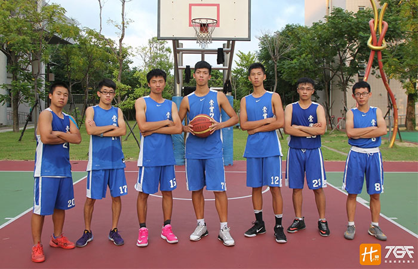

貼文時間：2017/09/22

坐落在彰化員林市，離市區步行約15分鐘的崇實高工，其田徑隊在全國赫赫有名，籃球隊發展至少也有十幾個年頭，在彰化縣算是老牌的球隊之一，也曾進軍南區複賽，近年仍在彰化縣內仍保有一定競爭力，在105學年度彰化區預賽獲得第六名，並在2017傳續盃打進全國決賽……
崇實高工的校門口張寫著八個字「勤奮堅實、卓然自立」，意會著球員必須勤奮以對事物，堅實以對困境，既使環境及資源貧乏，仍要卓然自立。而事實上，崇實高工在過去幾年的比賽中，並沒有教練，球員練習的狀況趨向學長帶學弟，一屆屆傳承，又因練習時間的不足，導致默契與戰術新知等與其他強隊呈現落差，面對這樣的困境，高三主力中鋒-劉欣奇表示，即便練習的環境不甚理想，隊員的基本能力有限，整隊人數不到十人，甚至沒有教練，但我們都很清楚一個方向，就是盡全力比賽，不論處境多麼不利，奮力去挑戰他們就對了！
升上三年級的新任隊長-林崇恩也說到，即便比數落後也不能放棄，透過籃球不僅能在場上切磋較勁，亦能以球會友增進自己的視野！
崇實高工在今年度乙級聯賽彰化區獲得第六名，僅差一步晉級南區複賽，對於外人，崇實的表現已出人意料，但崇實的球員並未自滿，拾起失敗的不甘，備戰下個盃賽，隨後在暑假舉行的傳續盃全國籃球錦標賽，以台中區亞軍之姿進軍全國，在吸取傳續盃的經驗後，崇實將持續邁進，如同校園建築上刻著那四個字「鳶飛魚躍」反映著崇實對自身的期許，期待未來的比賽更進一步！